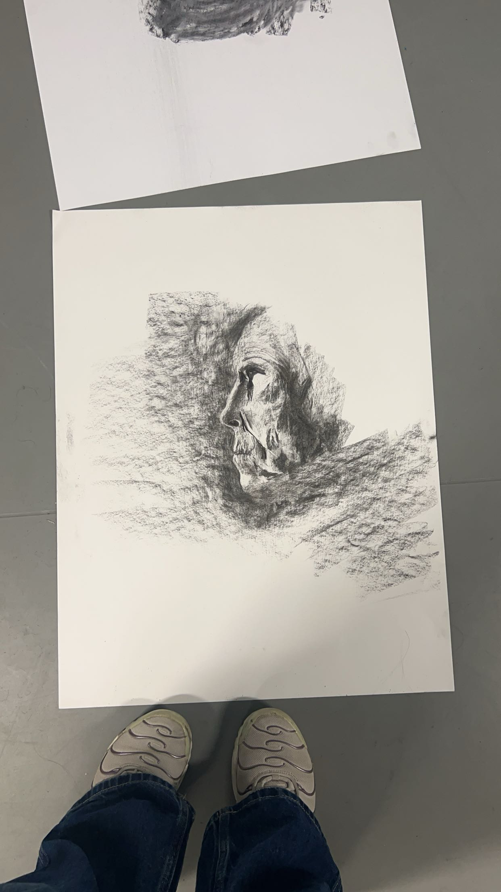

Fusain #1
Ce dessin au fusain a été réalisé lors d’un cours de croquis d’observation, durant ma première année de licence en design. Il fait partie d’une série d’études rapides, chacune réalisée en 10 à 15 minutes. L’objectif de l’exercice était de s’entraîner à capter rapidement les formes, les proportions et les attitudes à partir d’un sujet.